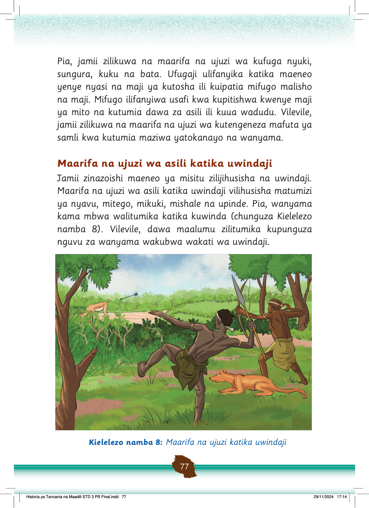

Pia, jamii zilikuwa na maarifa na ujuzi wa kufuga nyuki, sungura, kuku na bata.
Ufugaji ulifanyika katika maeneo yenye nyasi na maji ya kutosha ili kuipatia mifugo malisho na maji.
Mifugo ilifanyiwa usafi kwa kupitishwa kwenye maji ya mito na kutumia dawa za asili ili kuua wadudu.
Vilevile, jamii zilikuwa na maarifa na ujuzi wa kutengeneza mafuta ya samli kwa kutumia maziwa yatokanayo na wanyama.
Maarifa na ujuzi wa asili katika uwindaji
Jamii zinazoishi maeneo ya misitu zilijihusisha na uwindaji.
Maarifa na ujuzi wa asili katika uwindaji vilihusisha matumizi ya nyavu, mitego, mikuki, mishale na upinde.
Pia, wanyama kama mbwa walitumika katika kuwinda (chunguza Kielelezo namba 8).
Vilevile, dawa maalumu zilitumika kupunguza nguvu za wanyama wakubwa wakati wa uwindaji.
Wawindaji wawili wako msituni wakimwinda swala kwa mkuki na mishale. Mbwa anawasaidia katika uwindaji.
Kielelezo namba 8: Maarifa na ujuzi katika uwindaji
Historia ya Tanzania na Maadili STD 3 PB Final.indd 77
29/11/2024 17:14